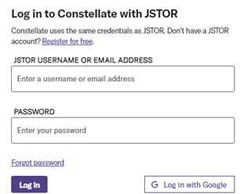

Constellate - A free tool for text analysis
Constellate is a free resource to learn and teach text analysis in python. According to Constellate website: Constellate is part of ITHAKA a not-for-profit organization helping the academic community use digital technologies to preserve the scholarly record and to advance research and teaching in sustainable ways.
The Constellate can be accessed from here. It uses the same credentials as JSTOR. You can either use JSTOR credentials or create a new account for free.

Section 2
This is the content for Section 2.
Section 3
This is the content for Section 3.
Section 4
This is the content for Section 4.